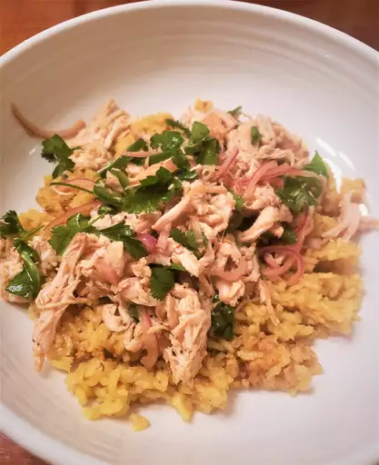

Chicken Rice

Description
I've mixed elements of Vietnamese, Thai, Indonesian and other Asian cuisines to make a delicious chicken and rice dish topped with a fresh herb salad.
Ingredients
- 1 large chicken breast, skin on
- 1 teaspoon kosher salt, plus more as needed
- 1 tablespoon vegetable oil
- 1 tablespoon minced ginger
- 2 cloves garlic, minced
- ⅓ cup diced onions
- ½ teaspoon turmeric
- 1 cup plus 1 tablespoon jasmine rice
- 1 ½ cups chicken broth
- ½ cup thinly sliced red onion
- ¼ cup sliced green onions/li>
- 1 small red Fresno chili, thinly sliced, or any other hot pepper
- 2 tablespoons fresh lime juice, plus more to taste
- 2 teaspoons soy sauce, or to taste
- 1 teaspoon sambal hot chili sauce
- 1 teaspoon sesame oil, or to taste
- ¼ teaspoon freshly ground black pepper
- salt to taste
- ½ cup freshly torn mint leaves
- ½ cup freshly torn cilantro leaves
- lime wedges (Optional)
Steps
- Set chicken breast onto a cutting board and make 5 or 6 shallow cuts through the skin. Season generously on both sides with salt.
- Heat vegetable oil in a skillet over medium high heat and sear chicken breast, skin-side down, until the skin is golden brown and fat has rendered out, about 5 minutes. Flip breast over, and keep cooking until chicken is cooked through, about 5 minutes more. If oil starts to smoke before the chicken is cooked, reduce heat to medium or medium-low.
- Turn off the heat and transfer chicken to a plate to rest until cool enough to handle. Peel off the skin and finely chop. Refrigerate chicken breast.
- Add minced chicken skin back into the skillet over and medium heat. Cook and stir until the skin browns and starts getting crisp, 3 to 5 minutes. Add ginger, garlic, and onions and cook, stirring, until onions start to turn translucent, about 5 minutes. Add turmeric and rice; cook and stir until rice is well coated with oil, 2 to 3 minutes.
- Stir in broth, turn heat to high, and bring to a boil. Cover, reduce heat to low, and simmer undisturbed for 20 minutes. Turn off the heat and set a timer for 10 minutes to allow rice to rest.
- Meanwhile, shred the chicken meat using your hands or cut into small pieces. Place into a bowl. Add red onion, green onions, Fresno chili, lime juice, soy sauce, hot sauce, sesame oil, salt, pepper, fresh mint and cilantro. Toss until well combined. Taste and adjust with more lime juice, salt, and/or spice as needed.
- After the 10 minute rice timer is up, remove cover, and fluff rice with a fork. Taste and adjust seasoning if necessary. Serve rice topped with the chicken herb salad mixture and lime wedges.